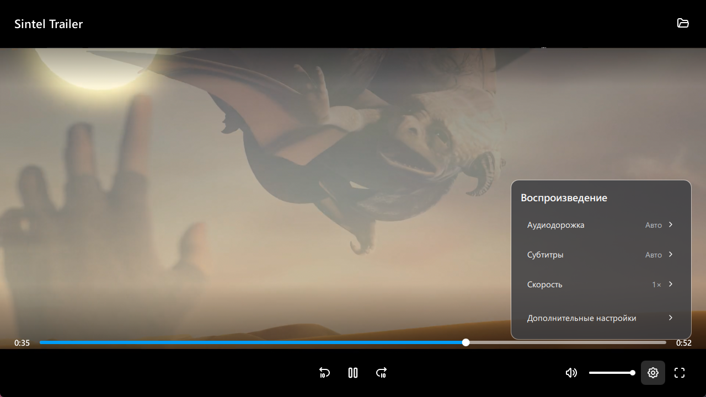

Adjust playback
Choose audio and subtitle tracks, change playback speed and adjust audio delay. Subtitle translation into English and Russian uses your Codex sign-in.
Open files and video streams in an mpv-based player. Use qplay on its own or to watch videos from qbutt and qcatch.

Choose audio and subtitle tracks, change playback speed and adjust audio delay. Subtitle translation into English and Russian uses your Codex sign-in.
Upscaling and intermediate frame generation depend on your GPU. Additional frame-generation components download automatically while regular playback remains available.